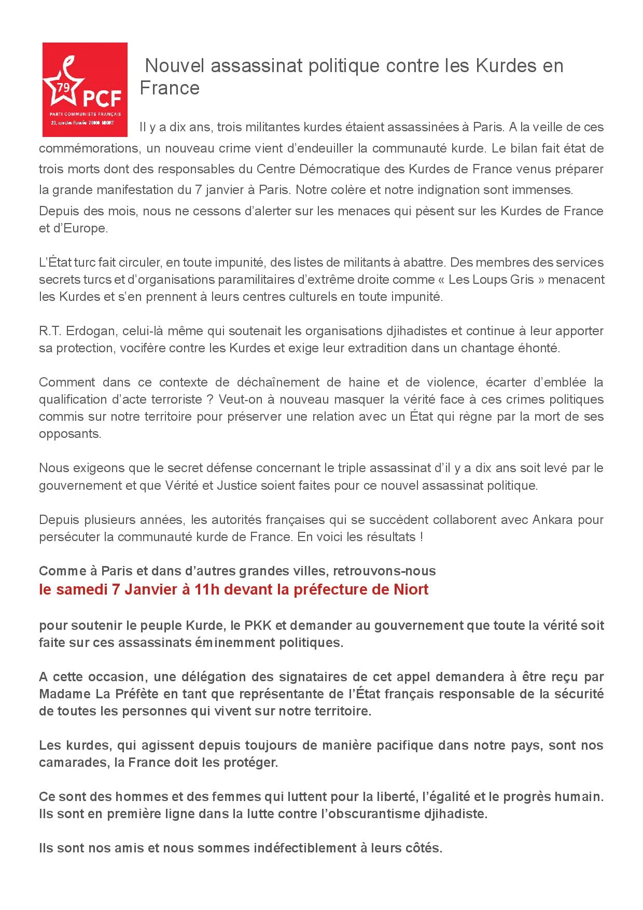

Appel de la fédération
À Niort, appel au rassemblement du 7 janvier en soutien au peuple kurde
Date indiquée par Facebook · 5 janvier 2023
Repères éditoriaux
Nous avons appelé au rassemblement du 7 janvier à 11 h à Niort. Le compte rendu de la fédération témoigne de la mobilisation.
Texte conservé avec la publication
Rassemblement de soutien au peuple kurde le samedi 7 janvier 2023 à NIORT à 11 heures devant la préfecture des Deux-Sèvres.
Il y a dix ans, trois militantes kurdes étaient assassinées à Paris. Le 23 décembre 2022, Emine Kara, Mir Perwe, Abdulrahman Kizil, réfugiés dans notre pays ont été froidement assassinés devant le centre culturel Kurde à Paris.
Nous ne remercierons jamais assez les kurdes pour le lourd tribut payé dans la lutte contre Daesch. Les responsables de la communauté kurde n'ont de cesse d'alerter sur les menaces qui pèsent sur eux. La France ne peut laisser faire.

Sources
Archive rouge · export Facebook · AR-0002-FB-01786
À lire aussi · À Niort, rassemblement de solidarité avec le peuple kurde